Мы обслуживаем пасеку, а вы контролируете процесс через сайт. Мёд будет расфасован в выбранные вами банки с именными наклейками и отправлен курьером вам или вашим близким.
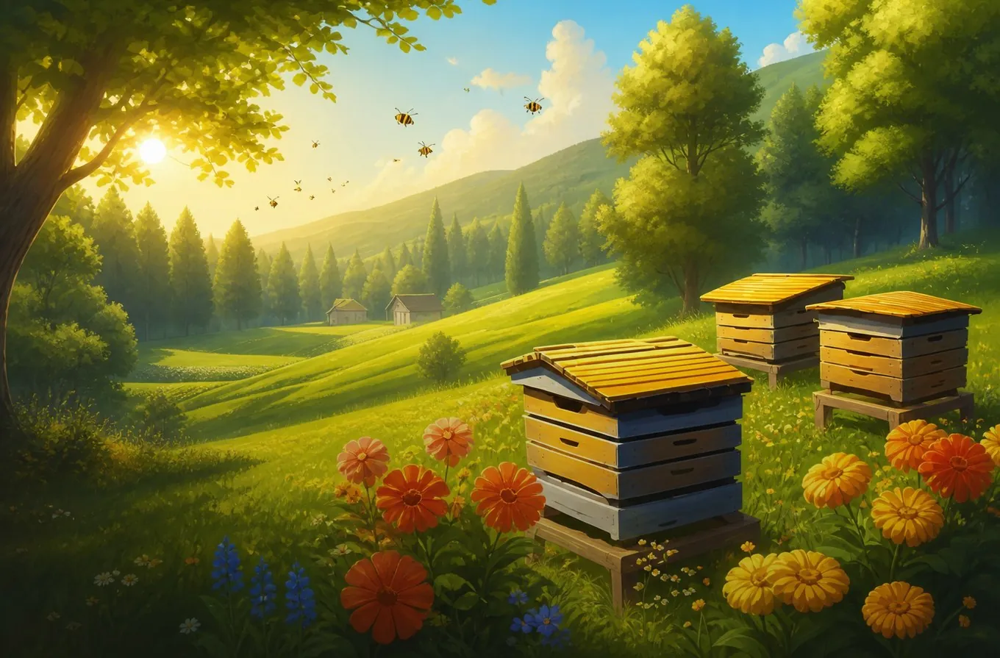
В Приволжье
Пчелиный улей
Новая семейная традиция России. Купите свой улей на лесной пасеке и каждый год получайте собственный мёд гарантированного качества.
Смысл
Почему люди покупают ульи?
Приятно иметь свой улей, наблюдать за пчёлами и появлением мёда. Но вас не покусают пчёлы, вы не потратите массу времени на обучение и денег на оборудование.
Вы точно знаете, что мёд хороший, ведь всё происходит у вас на глазах. За качеством мёда следит итальянский медовый сомелье и шеф-повар. За пасеками следят пчеловоды, а за ними — ветеринарный надзор. Мы ежегодно подтверждаем качество, проходя тесты и аккредитацию пасеки в государственные ветеринарные лаборатории.
Этикетки можно выбрать из 50+ готовых вариантов или заказать уникальный дизайн, сделанный вами или под вас. Например, в партии мёда может быть несколько банок-открыток для лучших друзей.
Вы получите годовой запас мёда и подарков. Всегда будет чем полакомиться и угостить гостей. Именной мёд с вашей пасеки станет интересным подарком близким по любому поводу.
Покупка улья — инвестиция в здоровье семьи и близких. +1 тема для неформального разговора. Мёд укрепляет здоровье и отношения ;-)
Благодаря тому, что мёд всегда под рукой, вы создадите новую полезную привычку и хотя бы частично откажетесь от других сладостей. Мёд совсем не портится, а цены на него растут каждый год.
Постоянный доступ к качественному мёду. Забудьте про муки выбора на Авито и ежегодные скандалы в СМИ про поддельный мёд на прилавках.
И самое главное: у кого из ваших знакомых есть своя пасека?.. Вот именно!
Такой продукт не купить на маркетплейсе.
Домашний мёд
Чем домашнее отличается от покупного?
Все мы знаем разницу между клубникой с дачи и из магазина. С мёдом так же. Глубиной вкуса и его насыщенностью, абсолютной чистотой от всяческой химии и уютом ручной работы.
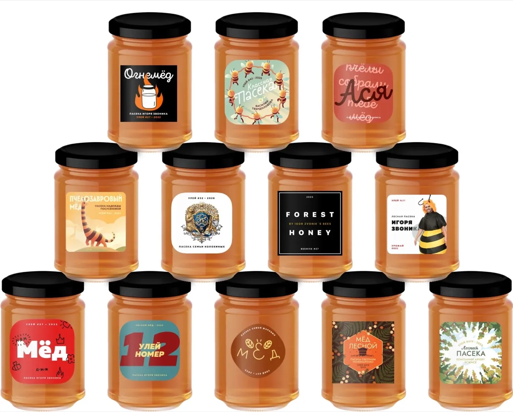
Вкус и свойства мёда с пасеки
«Это купаж нектара множества медоносов, а не одного. Поэтому имеет очень глубокий вкус. Он не приторный и совсем чуть-чуть терпкий.»
Мёд с пасеки — прозрачный, жидкий и лёгкий, как акациевый. Очень ароматный, пахнет цветами.
Давиде, итальянский шеф-повар, винный и медовый сомелье
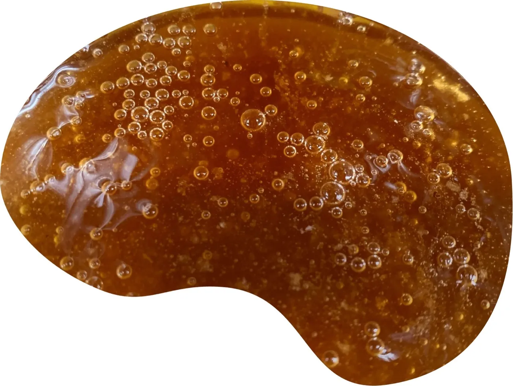
Промышленное пчеловодство — это забота о деньгах.
Пластиковые ульи, пчёлы напрокат, поля с пестицидами.
Мы же в первую очередь заботимся о свойствах мёда и пчёлах.
Ведь это то, что едят наши семьи, а пчёлы — важная часть экосистемы, попавшая под угрозу вымирания.
80% мёда — фальсификат
По данным Роскачества. Поэтому прозрачность пасеки важнее красивой банки на полке.
Как мы заботимся о пчёлах
Дедовские методы, растительные «антибиотики», мёд оставляем пчёлам на зиму, пасека стационарная.
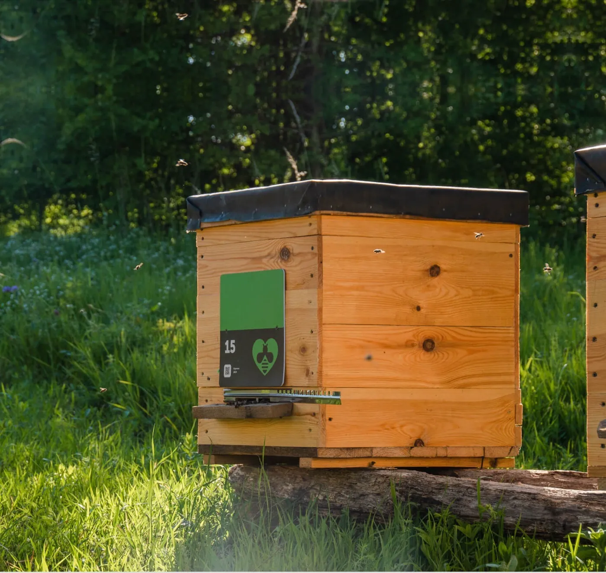
С 2018 года
Маленькие домашние эко-пасеки
Мы привлекаем таких же фанатов экологичного подхода и развиваем маленькие домашние эко-пасеки. Мы начали с одной маленькой пасеки в 2018 году и по мере роста не стали делать из неё большую — так потеряется качество и тот самый домашний подход.
Все наши ульи находятся только в Приволжье. Вы сможете выбрать пасеку в личном кабинете сразу после оформления заказа.
Что вы получаете
Во-первых, улей действительно ваш
Это не подписка и не аренда. Улей даже по бухгалтерским документам переходит в вашу собственность. Сертификат именной, содержит номер улья и уникальный QR-код.
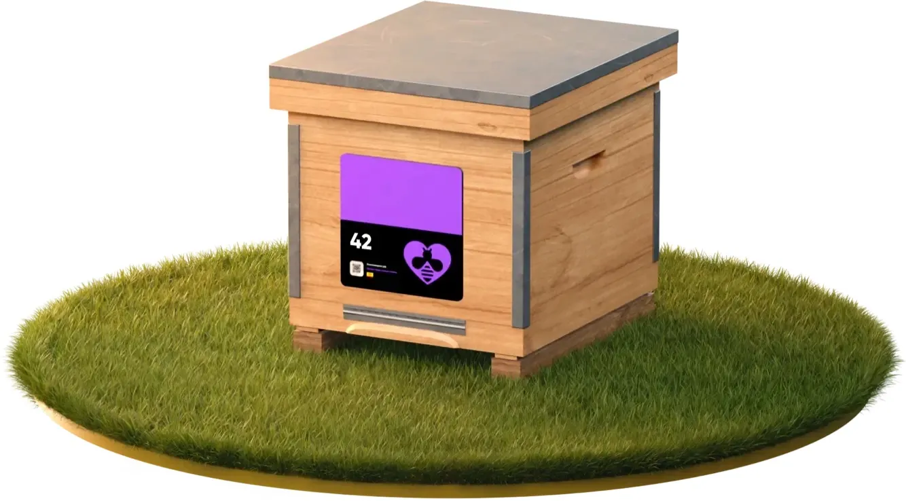
Выбор номера и герб
Вы можете выбрать номер улья — совершенно любой, хоть в двоичной системе счисления. Мы можем нарисовать на улье логотип, семейный герб или поместить фото.
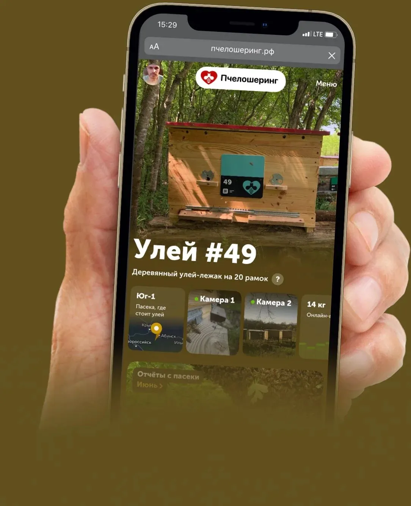
Личный кабинет улья
В любой момент загляните на свою пасеку. Смотрите, как живут пчёлы, какая сейчас погода и что происходит у вашего улья. Даже если до него тысячи километров.
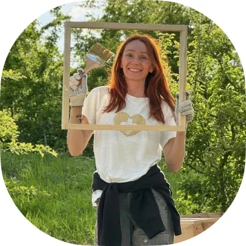
Онлайн-трансляции 24/7
Пасека живёт без выходных. Цветение, работа пчеловода, новые фотографии, видео и заметки появляются в личном кабинете весь сезон. Вы не просто ждёте мёд — вы проживаете историю его создания.
Настройка урожая: вы сами решаете, каким он будет. Размер банок, оформление, подписи и подарочная упаковка. Для вас мёд делают по эко-стандартам под вашим контролем.
Новая семейная традиция
9 из 10 рекомендуют Пчелошеринг друзьям
«И то, что теперь на столе всегда не банка нутеллы, а баночка мёда — это супер. Отказ от сладкого мне кажется не гармоничным, поэтому мёд стал полезной заменой.»
«Вместе с детьми смотрим на пчёл, проверяем сколько мёда было собрано вчера. Было сюрпризом, что мёда может стать как больше, так и меньше! Если плохая погода, то пчёлы мёд не собирают, а наоборот едят.»
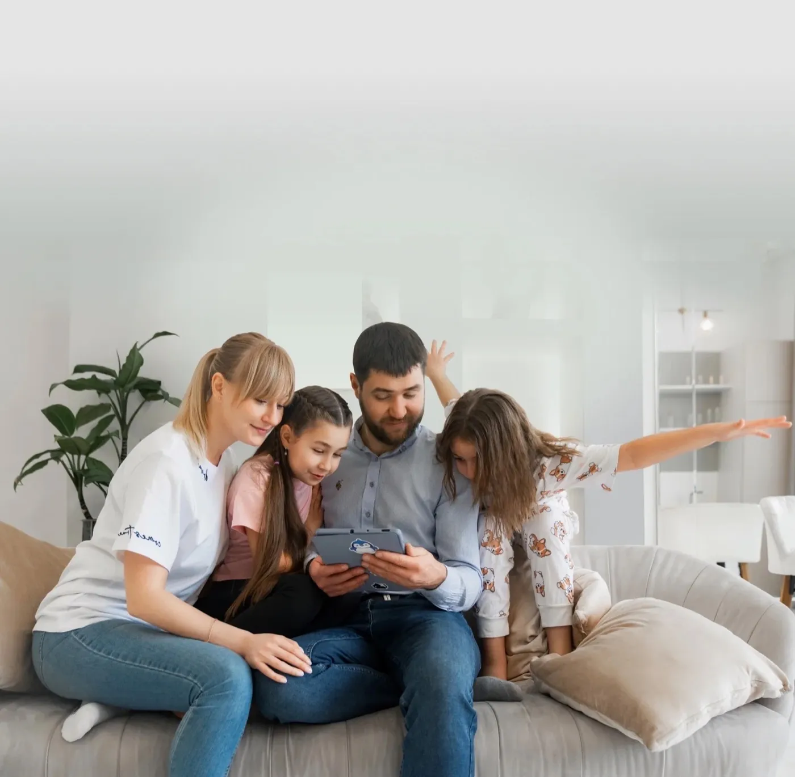
Всё по порядку
Что и когда вы получите
Сейчас
Вы покупаете улей на одной из наших эко-пасек
Это небольшие пасеки, которые спрятаны в лесах Приволжья.
Сразу
Вы контролируете всё через приложение
Задействованы фотографы и десятки камер наблюдения. Уникальный контент: фото, видео, текст.
Сезон
Мы обслуживаем улей, оберегаем пчёл, снимаем процесс
Наблюдая за пасекой, вы узнаете много нового о пчёлах, природе, мёде.
Сентябрь
Выбираете банки и дизайн наклеек
Всё как вы хотите: от типа и размера тары до текста и картинки на этикетке.
Осень
Мёд фасуется без контакта с металлом
Эта технология максимально сохраняет первозданный вкус и качества мёда.
Доставка
Вы получаете весь урожай сразу или частями
Чтобы не хранить дома коробки с мёдом. Каждый день у вас на столе будет баночка гарантированного качества.
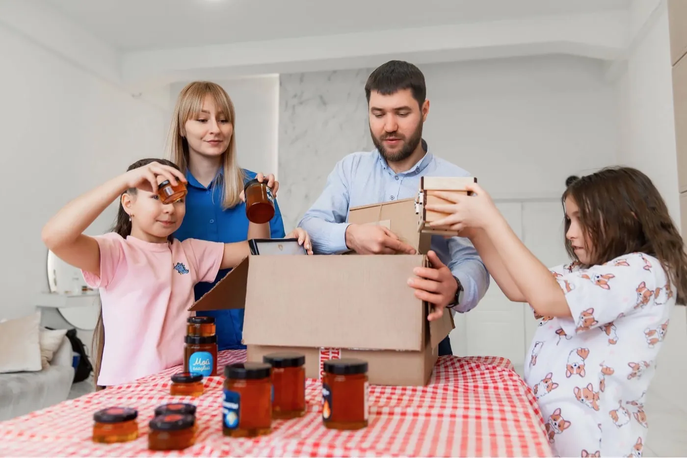
Купить улей на лесной пасеке
Тарифы сезона 2026
Тариф «Для себя»
Треть улья
26 100 ₽
До 6—7 кг мёда ежегодно · доля в улье 33%
- Год обслуживания и фасовка урожая (далее 11 900 ₽/год)
- Личный кабинет улья с фотоотчётами
- Ежедневные обновления
- 3 варианта дизайна этикеток из 50+
- Можно увеличить тариф позже
Тариф «Пчелиный улей»
Целый улей
72 100 ₽
До 20–23 кг мёда ежегодно
- Год обслуживания на пасеке и фасовка урожая (далее 34 500 ₽/год)
- Личный кабинет улья с фотоотчётами
- Любой номер улья
- Трансляции с пасеки и датчик веса контрольного улья
- Безлимитный выбор дизайна этикеток — каждый член семьи выбирает свой
Что вы покупаете
Один из ульев на одной из пасек с годовым обслуживанием. Улей — ваша собственность по всем документам.
- Удалённое наблюдение через личный кабинет
- Подконтрольное производство и управление внешним видом продукта
- Качество, гарантированное прозрачностью процессов и ветеринарным контролем РФ
- Постоянный доступ к мёду домашнего качества
23 кг мёда — это сколько?
20–23 кг — гарантированная урожайность улья. В одной столовой ложке около 20 граммов мёда. Если 3 человека из семьи будут съедать ежедневно по ложке, то за год уйдёт около 23 кг.
Разумеется, не все едят мёд каждый день, но это и замечательно: иначе бы вам не осталось мёда, чтобы делать невероятные лимонады летом!
Порядок оплаты
Первый платёж сейчас. Далее — ежегодная оплата обслуживания.
Стоимость улья оплачивается один раз. Обслуживание 2026 уже входит в тариф. Затем — 2027, 2028, 2029… Самое главное: стоимость мёда для вас равна стоимости обслуживания. И это очень дёшево.
Мёд с вашим дизайном
Всё как вы хотите
От типа и размера тары до текста и картинки на этикетке. Мёд в магазинах выглядит так, чтобы понравиться всем. Ваш мёд должен нравиться вам.
Именной мёд
Мёд имени себя любимого. Отдельное удовольствие — кушать каждое утро мёд со своей пасеки.
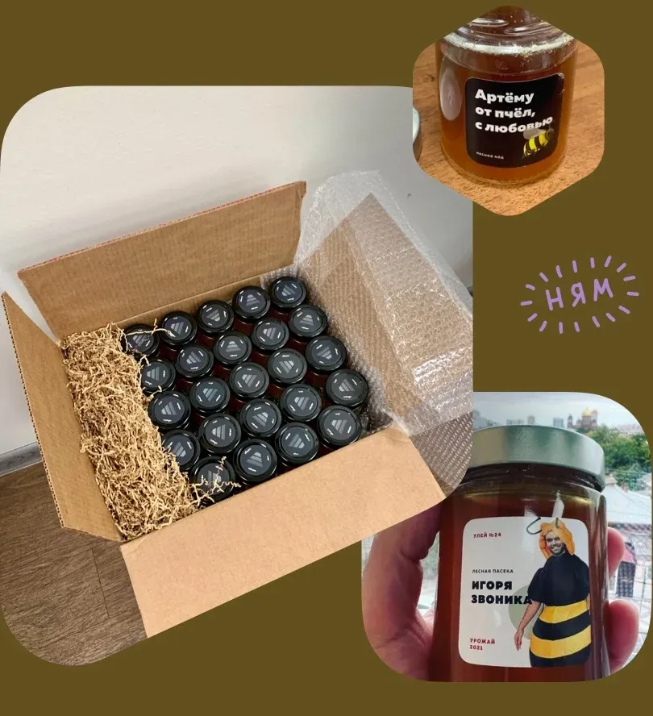
Подарочный мёд
Выпустите партию на подарки близким. Это даже могут быть персонализированные баночки с поздравлениями или шутками.
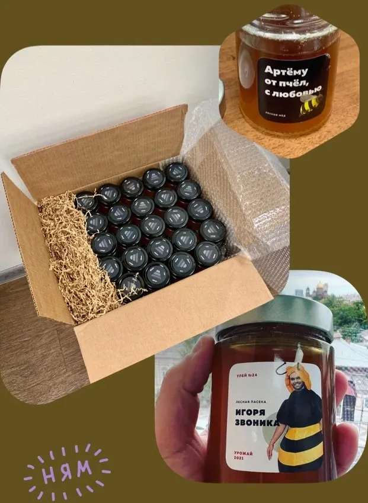
Семейный мёд
Напечатайте семейный герб, фото любимой собаки или мем, понятный только вам. Или целую коллекцию разных баночек.
Универсальный размер
Из таких банок удобно кушать, и они подходят в качестве сувенира.
Корпоративные сувениры
Мёд может быть частью набора или самостоятельным сувениром. Можно добавить ложку, травы, посуду, свечи.
Мёд на продажу, СТМ
Полностью «белый» продукт под вашим брендом, с маркировкой, готовый к прилавку.
Корпоративный мёд
Забота о сотрудниках: команда видит сопричастность бренда к эко-продукции.
Цитаты и предсказания
Если выбрать порционные баночки, каждый день за столом — новая цитата, шутка или пожелание.
Большие банки и порционные
Большие — увесистый подарок. Порционные — одноразовые, очень удобно и приятно есть.
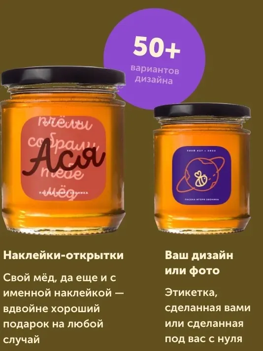
Для вас снимают фотографы уровня National Geographic
Наблюдайте за нашей работой и наслаждайтесь природой
Ежегодно мы снимаем 50–70 тыс. фото, и из них лишь пара сотен самых-самых идёт на публикацию. Мы первыми стали работать под видеонаблюдением, чтобы вы могли погрузиться в уютный мир лесных пасек.
В 2026 году мы начали транслировать прямо изнутри улья. Снимаем не только ульи: паттерны, игру света и тени, метафоричность природных форм. И, конечно, много-много красивых пчёл и цветов.
Первое приложение про настоящих пчёл. Про ваших пчёл.
Личный кабинет улья
Наблюдайте за всем происходящим: от зимовки пасеки до сбора мёда. Управляйте урожаем: когда и сколько получить, во что расфасовать и какой будет дизайн.
- Обзор вашего улья
- Ежемесячные фотоотчёты — лонгриды с красивыми фото и видео
- Онлайн-трансляции с пасеки: макро на леток и общий вид
- Количество мёда сейчас — онлайн-весы
- Настройка фасовки урожая и дизайна этикеток
- Доставка урожая
Ульевладельцам доступна веб-версия. Ежедневные обновления с пасеки — без сторис: спокойно, по делу и красиво.
Мёд на фасовке не контактирует с металлом. А только с заботой.
Кислоты, содержащиеся в мёде, вступают в реакцию с металлом и меняют вкус. Именно поэтому вместе с мёдом мы всегда отправляем деревянную ложечку.
Мы размещаем пасеки не там, где больше мёда, а там, где он вкуснее. Мы сами, наши семьи и близкие — первые клиенты. Поэтому особое оборудование и технологии: ни вкус, ни качества не теряются по пути от ваших ульев до ваших столов. Мы всегда будем уровня домашнего качества, без всяких «но».
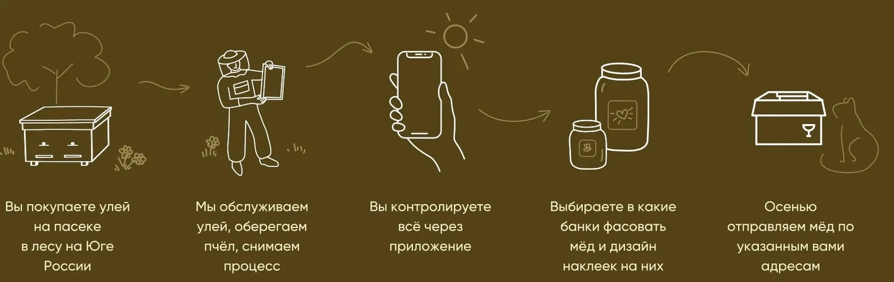
Получайте весь мёд сразу или частями по расписанию
23 кг мёда — это годовой запас на среднюю семью из двух-трёх человек. Кому-то удобно получить весь урожай, кому-то не захочется заполнять дом. Вы можете делать как вам удобно.
Весь мёд сразу
Сэкономите на доставке, но нужно освободить полку побольше.
По расписанию
Отправки с постоянной периодичностью. Например, раз в месяц напомним, а вы подтвердите фасовку, дизайн и адрес.
Когда понадобится
Понадобилась пара баночек на сувениры — через день они уже у вас. Закончился мёд на кухне? Нажали кнопку — мёд приехал.
Отправляем Почтой России, СДЭК и Яндекс Go. Бесплатная доставка до транспортной компании.
Ваш улей на одной из эко-пасек
Домашние пасеки, а не промышленные
Наши пасеки прячутся в лесах Приволжья от негативных воздействий сельского хозяйства и промышленности. Если вам повезло узнать, что такое помидоры или клубника с бабушкиного огорода, вы знаете, в чём отличие.
Домашние и эко-пасеки
- Деревянные ульи
- Мёд из нектара цветов и деревьев
- Оставляем пчёлам мёд на зиму
- Натуральный мёд
- Не тревожим пчёл — пасека стационарная
- Растительные «антибиотики»
Промышленные пасеки
- Пластиковые ульи
- Кормят пчёл сахаром
- Полный забор мёда у пчёл
- Разбавленный мёд
- Пчёл возят по С/Х полям
- Химические антибиотики
Себестоимость мёда нашего производства в 5–7 раз выше, чем у промышленных пасек. Средний пчеловод назовёт нас «фанатиками». Мы пошли другим путём — не строить огромные пасеки, а открывать множество маленьких. С 2024 года — программа пасек-партнёров, которые проходят отбор у медового сомелье, химической лаборатории и шеф-пчеловода. Все — в Приволжье, со своим уникальным мёдом.
Nectar Staking
Улей в Telegram
Можно владеть своим ульем с сертификатом NFT на криптокошельке Gram ( Бывший TON ). Так его удобно передавать, использовать как залог или продать урожай и получить прибыль.
Новый трэнд цифровых активов. Ваш улей в мире блокчейна, где передачи происходят мгновенно.

Многолетняя инвестиция
Яблони и другие плодовые деревья
Кроме улья можно подарить или взять во владение яблоню и другие плодовые деревья на тех же землях Приволжья. Это не разовый сюрприз, а живой актив: дерево растёт, цветёт, даёт урожай годами.
Пчёлы опыляют сад, сад кормит пчёл. Вы получаете и мёд, и фрукты — с именным деревом, как с именным ульем. Чем дольше владеете, тем сильнее дерево и тем щедрее отдача. Настоящая многолетняя инвестиция в землю, вкус и семейную традицию.
Смотреть растенияСреди владельцев
Розыгрыши «медовых» подарков в Telegram
Владельцы ульев участвуют в тематических розыгрышах подарков Telegram: медовые стикеры, коллекционные NFT-подарки и сюрпризы сезона. Следите за каналом — и держите улей, чтобы быть в круге.
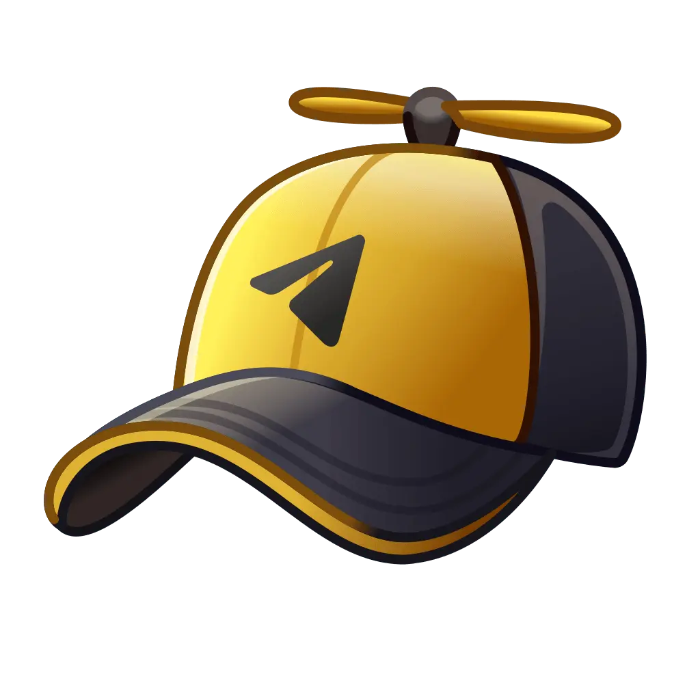
Канал BzzzВопрос-ответ
Если что — пишите
Менеджер в Telegram ответит лично. Канал — чтобы жить пасекой вместе.
Написать менеджеруВо-первых, вы покупаете улей. Он ваш, вы платите за него единожды. Это как квартира, но для пчёл.
Во-вторых, вы ежегодно платите за обслуживание улья, заботу о пчёлах, сбор и фасовку мёда и так далее.
В-третьих, вы можете продать свой улей или подарить другу, если вам надоест. Это ваше имущество, ваше право выбирать, как им распоряжаться. Можете даже забрать его себе домой ;-)
Самое главное: стоимость мёда для вас равна стоимости обслуживания! И это очень дёшево!
Да, давайте знакомиться. Нас зовут Миша и Артём. Мы оба петербуржцы, оба айтишники, оба любим природу, лес и все вот это вот.
Миша переехал жить сюда 5 лет назад, а до этого занимался развитием сети эко-магазинов, управлял клубом, увлекался сисадминством. Потом всё это заменилось на коневодство, пчеловодство, приём гостей и волонтёров у себя в лесу.
Артём — веб-дизайнер и арт-директор. Его очень впечатлила жизнь на природе: выращивать еду, строить дом, делать всё возможное своими руками. Из желания поделиться этими впечатлениями и появился Пчелошеринг.
Сегодня наши ульи живут только в Приволжье — на маленьких домашних эко-пасеках, где пчёлы всегда под присмотром.
Урожай собираем максимально поздно, как позволяет погода — чтобы мёд успевал дозреть в сотах, это важно.
Есть несколько вариантов: весь мёд сразу одним отправлением; равными порциями каждый месяц или раз в 4 месяца; доплатить за хранение и получать мёд в любой момент хоть по 1 баночке за раз.
Главная причина — это неинтересно.
Это неинтересно нам. Заниматься продажами, думать о ценах, о том, как сэкономить, где прорекламироваться… Это не то, чем хотелось бы заниматься. И это всё превращается в заботу о деньгах.
И это неинтересно вам. Мёд можно поискать и найти хороший, купить, съесть. И всё. Очень интересно! (сарказм)
А хочется сделать что-то новое. Хочется, чтобы это был не просто съеденный или подаренный мёд, а целое приключение! Даже покупателей из далёких заснеженных городов хочется сделать сопричастными к процессу.
В эту небольшую сумму входят все пчеловодческие заботы:
- Экологичное ветеринарное обслуживание и регулярные осмотры пчёл. Без использования химических средств;
- Амортизация оборудования для улья и его частей;
- Расширение медоносной базы для пчёл. Мы высаживаем новые виды растений, которые дают много мёда и цветут в разное время — так у пчёл всегда будет чем полакомиться и что принести в улей;
- Фасовка мёда в крупную тару (1,5 л и более, а в мелкоформатную за небольшую соразмерную доплату);
- Выбор из разработанного нами каталога дизайнов для наклеек. В выбранный дизайн можно вставить своё имя, название или логотип;
- Доставка мёда до транспортной компании.
У нас, например, больше половины мёда уходит на напитки. Мёд с пасеки очень вкусный, его классно даже просто без всего есть. Ну, или с хлебом. Поэтому у покупателей, как правило, мёд заканчивается сильно раньше, чем они рассчитывали… и уже через месяц-два они вновь заказывают свой «запас на зиму».
Кроме того, мёд с вашей этикеткой и оригинальным дизайном будет интересным подарком для друзей, знакомых и родственников на любой повод. И, как следует из предыдущего абзаца, они потом ещё попросят — 100%!
В офисе может висеть сертификат пасеки, а в ленте — новости с пасеки. Любые переговоры пройдут лучше, если подарить партнёрам баночку мёда с забавной этикеткой со своей пасеки. Можно угощать гостей, клиентов, сотрудников.
Ну и мёд можно продавать. Если вы покупаете целый улей (или больше), себестоимость мёда будет в 2,5—3 раза ниже, чем рыночная. Так что вот!
Урожай мёда зависит от погоды. Если она оптимальная весь сезон, то будет максимально много цветов и погоды, в которую пчёлы смогут к ним полететь.
Лесные пчёлы собирают мёд с 30+ видов основных медоносов нашего района. Растения зацветают постепенно. И такое, чтоб толком не цвели все — довольно большая редкость.
Так что пасека защищена от неурожая благодаря биоразнообразию, которое мы поддерживаем, высаживая на нашей поляне новые виды растений.
Да! У вас есть доступ к разработанному нами каталогу дизайнов наклеек. Они очень разные, и одна лучше другой! В выбранный дизайн можно вставить своё имя, название или логотип.
За доплату возможно создание дизайна специально для вас или печать макета, созданного вами.
Обратите внимание: количество разных дизайнов в одной партии мёда зависит от вашего тарифа.
Жжжурнал
Журнал о Пчелошеринге и пчёлах
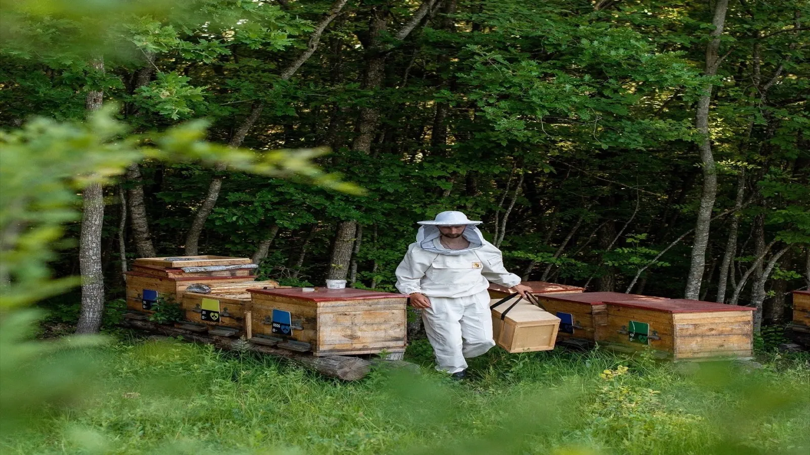
Как живёт лесная пасека
От зимовки до качки: тихий календарь Приволжья.
Почему домашний мёд другой
Купаж медоносов, а не одна культура с поля.
Забота о пчёлах
Почему мы оставляем мёд на зиму и не возим семьи по полям.